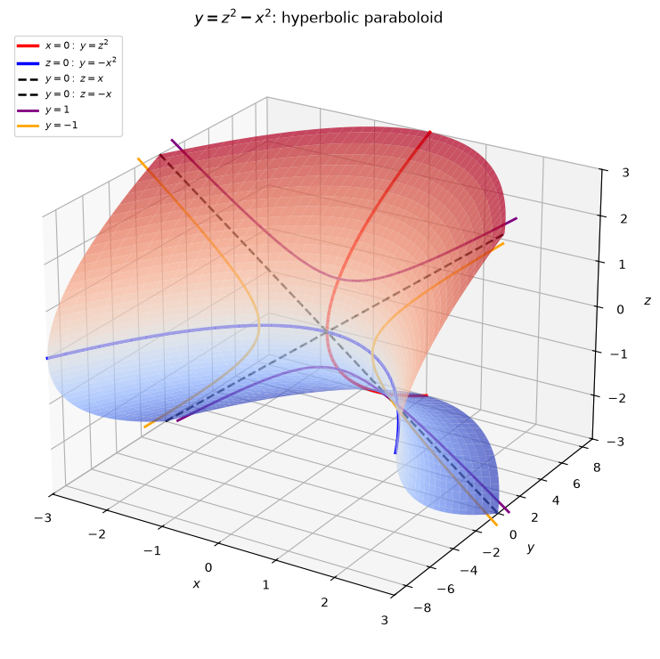
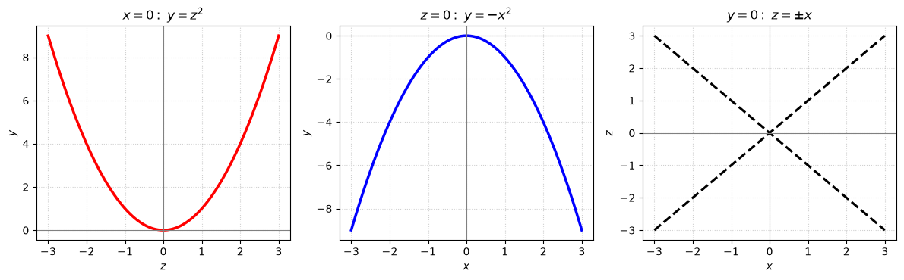
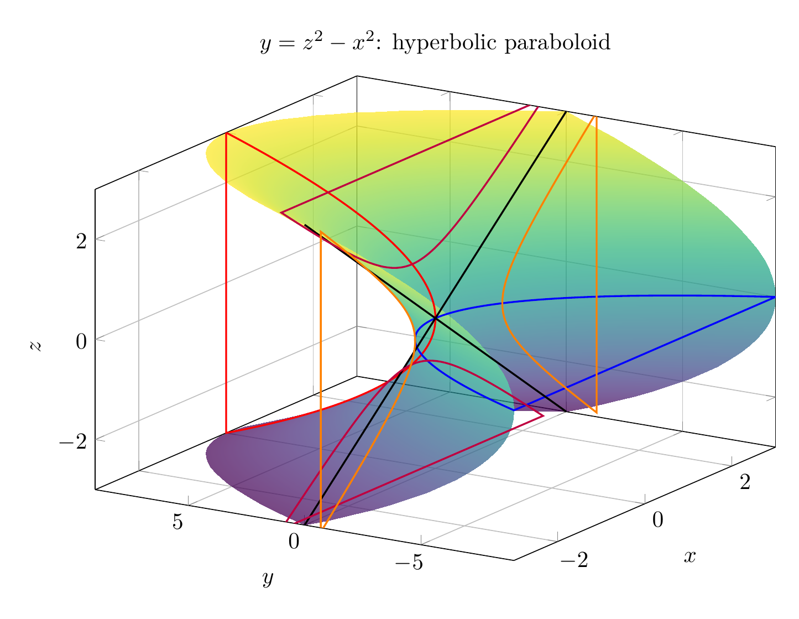
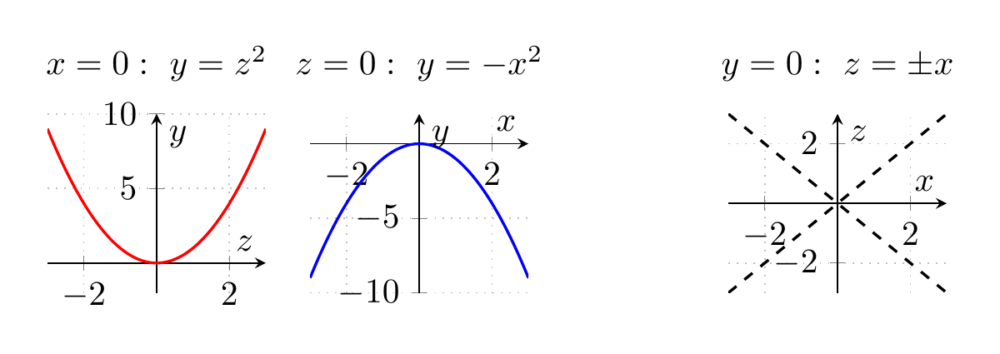

Path: mcma-Nex-N2-Pro/calculus-12.6.19/chat_20260824_175039_504862_utc_0800
Problem
Please solve the math problem in the image.

End of problem
Answer
We identify the surface by looking at its traces.
Given
$$
y=z^2-x^2.
$$
### Traces
**1. Horizontal traces \(y=k\).**
Set \(y=k\):
$$
k=z^2-x^2.
$$
- If \(k>0\), this is a hyperbola opening in the \(z\)-direction.
- If \(k<0\), this is a hyperbola opening in the \(x\)-direction.
- If \(k=0\), the trace degenerates to two intersecting lines:
$$
z^2-x^2=0 \implies z=\pm x.
$$
**2. Traces in planes \(x=k\).**
Set \(x=k\):
$$
y=z^2-k^2.
$$
For each fixed \(x=k\), this is a parabola opening upward in the \(yz\)-plane, shifted downward by \(k^2\).
**3. Traces in planes \(z=k\).**
Set \(z=k\):
$$
y=k^2-x^2.
$$
For each fixed \(z=k\), this is a parabola opening downward in the \(xy\)-plane, shifted upward by \(k^2\).
Thus the surface has hyperbolic horizontal traces and parabolic vertical traces, so it is a **hyperbolic paraboloid**, with a saddle point at the origin. In standard form,
$$
y=\frac{z^2}{1^2}-\frac{x^2}{1^2}.
$$
Therefore the surface is
$$
\boxed{\text{a hyperbolic paraboloid}}
$$
---




\documentclass[tikz,border=10pt]{standalone}
\usepackage{pgfplots}
\pgfplotsset{compat=1.18}
\begin{document}
\begin{tikzpicture}
\begin{axis}[
width=12cm, height=9cm,
view={-58}{24},
xlabel={$x$}, ylabel={$y$}, zlabel={$z$},
title={$y=z^2-x^2$: hyperbolic paraboloid},
grid=major,
xmin=-3, xmax=3,
ymin=-9, ymax=9,
zmin=-3, zmax=3,
colormap/viridis,
]
\addplot3[
surf,
domain=-3:3,
y domain=-3:3,
samples=35,
shader=interp,
opacity=0.72
] ({x},{y^2-x^2},{y});
% x=0 trace: y=z^2
\addplot3[domain=-3:3, samples=100, thick, red] ({0},{x^2},{x});
% z=0 trace: y=-x^2
\addplot3[domain=-3:3, samples=100, thick, blue] ({x},{-x^2},{0});
% y=0 traces: z=\pm x
\addplot3[domain=-3:3, samples=100, thick, black, dashed] ({x},{0},{x});
\addplot3[domain=-3:3, samples=100, thick, black, dashed] ({x},{0},{-x});
% y=1 hyperbola: z^2-x^2=1
\addplot3[domain=-3:3, samples=100, thick, purple] ({x},{1},{sqrt(x^2+1)});
\addplot3[domain=-3:3, samples=100, thick, purple] ({x},{1},{-sqrt(x^2+1)});
% y=-1 hyperbola: z^2-x^2=-1
\addplot3[domain=-3:3, samples=100, thick, orange] ({sqrt(x^2+1)},{-1},{x});
\addplot3[domain=-3:3, samples=100, thick, orange] ({-sqrt(x^2+1)},{-1},{x});
\end{axis}
\end{tikzpicture}
\end{document}

\documentclass[tikz,border=10pt]{standalone}
\usepackage{pgfplots}
\pgfplotsset{compat=1.18}
\begin{document}
\begin{tikzpicture}
\begin{axis}[
name=plot1,
width=3.8cm, height=3.4cm,
xlabel={$z$}, ylabel={$y$},
title={$x=0:\ y=z^2$},
grid=both,
grid style={dotted},
axis lines=middle,
ymin=-2, ymax=10,
xmin=-3, xmax=3
]
\addplot[domain=-3:3, samples=100, thick, red] {x^2};
\end{axis}
\begin{axis}[
at={(plot1.east)}, anchor=west, xshift=0.45cm,
width=3.8cm, height=3.4cm,
xlabel={$x$}, ylabel={$y$},
title={$z=0:\ y=-x^2$},
grid=both,
grid style={dotted},
axis lines=middle,
ymin=-10, ymax=2,
xmin=-3, xmax=3
]
\addplot[domain=-3:3, samples=100, thick, blue] {-x^2};
\end{axis}
\begin{axis}[
at={(plot1.east)}, anchor=west, xshift=4.7cm,
width=3.8cm, height=3.4cm,
xlabel={$x$}, ylabel={$z$},
title={$y=0:\ z=\pm x$},
grid=both,
grid style={dotted},
axis lines=middle,
ymin=-3, ymax=3,
xmin=-3, xmax=3
]
\addplot[domain=-3:3, samples=100, thick, black, dashed] {x};
\addplot[domain=-3:3, samples=100, thick, black, dashed] {-x};
\end{axis}
\end{tikzpicture}
\end{document}

End of answer